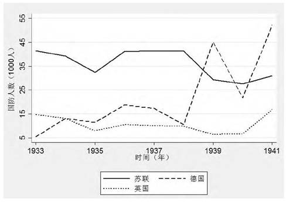

收录于合集
★
摘 要 ：权力转移理论认为崛起国必然首先发起对主导国的进攻。近来一些学者运用这种简单的单向思维来分析中美关系的未来, 得出悲观的结论。但这一逻辑存在以下问题:一是在理论上排除了主导国会首先发动进攻的可能;二是在经验上被相关学者证伪;三是在政策建议中忽视了如何防范主导国发动进攻。本文借助前景理论中对“收益”和“损失”的框定来分析权力转移中崛起国和主导国的关系图景, 提出四点假设。接着运用二战中的德国和苏联的关系以及20世纪80—90年代的日本和美国的关系两个案例, 重点对假设三 (当主导国将前景框定为“损失”, 而崛起国框定为“收益”时, 主导国倾向于发动预防性战争) 进行验证。
关键词 ：权力转移; 崛起国; 主导国; 前景理论;
★简
作者简介
王国欣, 中南财经政法大学哲学院政治学系14级本科生。
刘建华, 中南财经政法大学哲学院政治学系副教授。
1958年奥根斯基(A.F.K.Organski) 在《世界政治》 (World Politics) 一书中首创权力转移理论 (Power Transitioin Theory, 下文简称PTT) 。由于它直接关注国际体系中权力转移时期主导国与崛起国之间的关系而被广泛运用于国际关系的研究, 特别是现实政策含义的研究。 近年来, 随着中国的持续崛起、美国霸权的相对衰落等因素所导致的全球权力的重新分配, PTT再度作为重要的智力因素而重现, 尤其是加大了对中美问题的关注。各种分析所暗含的结论和担心是:中美之间的权力转移会导致冲突和战争, 而且中国是战争发起国。但是否只有崛起国发动对主导国的攻势这一种可能?主导国在权力转移中是否会首先采取行动?权力转移中的大国关系模式是否仅有这一种可能?本文通过借鉴前景理论中的相关内容对权力转移中的崛起国和主导国关系模式做进一步探索。
权力转移理论回顾与不足
(一) 崛起国和主导国关系模式的单向思维
在现实主义的理论范式中, 存在着不同的国家二分法, 其中修正国家和维持现状国家是最为常用的分类方法, 这一标签适用于大多数权力理论学者, 这些学者将“崛起国”定义为不满意的修正主义国家, 而将“主导国”定义为满意的维持现状国, 其潜在逻辑为崛起国首先发动对主导国的攻势。
如奥根斯基把国际体系中的国家分为四种类型:强大而满意型、强大但不满意型、虚弱而满意型和弱小但不满意型。 体系的稳定取决于前两种类型的国家之间的权力对比关系。当不满意国家认为有机会通过战争赢得秩序主导权时, 他们就会毫不犹豫地通过战争来争取改变现状。崛起国通常是修正国, 而主导国则是维持现状国, 战争往往由对现状不满的崛起国发起。
第二、三代权力转移理论虽然从不同的层面对PTT进行发展, 但这种简单的单向逻辑倾向一直存在。如亚采克·库格勒 (JacekKugler) 提出用军事建设来衡量崛起国的“满意”程度, 认为崛起国对现状不满必然会诉诸武力的提升。但其内在的逻辑假定仍认为崛起国是秩序的破坏者, 只不过是对崛起国的修正主义倾向提出衡量标准而已。而金宇祥(Woosang Kim) 对PTT做出重要修正, 提出“联盟转移理论”。他将联盟分为两类:一类是对现状满意并支持主导国的国家, 一类是不满于现状希望改变现状的国家。如果崛起国选择与不满于现状的国家结盟就是对现状不满的表现, 反之则相反。但金宇祥的理论也存在上述问题。虽然将崛起国和主导国扩展为崛起国联盟和主导国联盟, 但其理论仍认为崛起国联盟是秩序的破坏者, 即修正国家联盟;而主导国联盟则是现有秩序的维护者, 是现状国家联盟。道格拉斯·兰姆克 (Douglas Lemke) 使用国内结构的相似度数据来分析挑战国对主导国的“满意度”和“不满意度”, 但他仍存在将主导国视为现状国的倾向。罗纳德L·塔门(Ronald L.Tammen) 也认为当不满意的挑战国看到取代前主导国的机会时, 战争容易发生, 需要一个强大的主导国来维持和平。詹姆斯·莫罗 (James D.Morrow) 以及艾莎拉巴蒂·卡罗尔(Alsharabati Carole) 与以上学者合作的作品也呈现同样的倾向。
(二) 单向思维存在的问题
从以上论述可以看出, 权力转移理论采取简单的单向思维, 即将崛起国视为破坏体系稳定, 对现状不满的修正国, 而主导国则为对现有体系满意的现状国。 但这一论断存在以下三方面的问题, 首先, 在理论上, 这种单向思维排除了主导国也可能对现状不满的可能, 从而导致理论上的巨大缺陷。其次, 这种单向思维在经验上也是不成立的。戴尔·科普兰 (DaleC.Copeland) 在《大战的起源》一书中从经验上推翻了这种单向逻辑, 即德国发动第二次世界大战可能是出于对苏联今后发展会挑战自身主导地位的担心和恐惧———主导国也可能会发动先发制人的打击。再次, 这种单向思维在政策建议上也是存在问题的。简单地将崛起国视为对现状不满的修正国会导致所有的政策焦点被置于如何安抚崛起国从而使其满意, 从而忽略了如何应对主导国的修正主义倾向的政策或战略思考。
(三) 对单向思维的挑战
一些学者也认识到这种单向思维存在的问题。如斯蒂文·陈 (Steven Chan)通过对历史经验和权力转移理论逻辑的研究得出结论:与传统观点认为的上升中的国家倾向于发动战争不同, “大国之间的战争更可能是由出现相对衰落的主导大国的预防动机引起的。而相对弱一些的上升中的大国则试图赢得时间而尽量避免直接的武装冲突”。“既存主导国家也可能倾向于改变和重塑国际体系, 以巩固和扩大其自身的利益”, 而上升中的国家由于从现有秩序中获益, 倾向于维持或者小幅修正现状。 也就是说, 传统权力转移理论关于修正崛起国挑战现状主导国的结论存在问题, 即忽视了主导国也可能是修正国的可能性。杰克·列维也持相似观点。
**
**
前景理论下的大国关系模式展望:交融的可能
为了进一步弥补PTT中的不足, 需要借鉴其他理论的思想, 其中国际关系中前景理论 (Prospect Theory) 的应用可以提供这样一种补充。 该理论认为当框定不同的参考点时, 参考点的变化会导致偏好的变化。当以现状为参考点时, 由于损失厌恶和禀赋效用的存在, 因而会有维持现状的倾向;当以未来为参考点时, 则会表现出风险倾向。
在众多运用前景理论考察国际冲突的学者中, 杰弗里·托利弗 (Jeffrey W.Taliaferro) 在探讨为什么大国在那些并不涉及其核心利益的边缘地区进行大规模的军事干涉时, 将前景理论和防御性现实主义结合起来, 认为大国领导人为了规避感知到的损失, 采取军事干预战略。从托利弗的分析中可以看出, 当大国框定为“损失”时, 大国首先采取措施甚至先发制人是可能的。维克多·查则利用前景理论分析一国采取先发制人的原因, 提出如果一国将情势框定“收益”状态, 即便该国认为可能遭受敌国袭击, 通常情况下也不会采取先发制人的措施;相反, 如果框定为损失, 则可能会采取先发制人的措施。虽然其目的是分析朝鲜的先发制人倾向, 但也可以反过来思考主导国的先发制人倾向。对于国际体系的稳定而言, 罗伯特·杰维斯 (Robert Jervis) 认为, 厌恶损失和禀赋效应有助于社会和政治稳定, 当国家不会为了获益而采取冒险行为时, 国际体系的稳定性就会提高。此外, 列维认为如果所有国家都将参考点定为现状, 而现状又是可接受时, 那么国际现状的挑战者就会更少, 现状偏好会进一步加强国际政治的稳定。
国内学者林民旺认为, 根据前景理论, 权力转移理论中现状满意国是因为它们处于收益框架内, 损失厌恶和禀赋效应促使其具有维持现状的偏好。[20]因此, 前景理论和权力转移理论的结合是有可能的。
本文在这些文献的基础上, 结合前景理论中对“损失”和“收益”的框定和PTT中崛起国和主导国的行为取向, 对崛起国和主导国的关系模式做进一步分析。
崛起国和主导国关系模式的新假设及其验证
(一) 崛起国和主导国关系模式的新假设
通过上述对PTT文献的简要评述, 笔者发现PTT不仅存在着崛起国发起对主导国攻势的单向思维倾向, 而且还存在着“权力转移”导致崛起国/现状国的政策选择 (战争或和平) 的简单思维。国际体系中崛起国与主导国实力对比的变化 (即权力转移) 并不能简单地导致崛起国或挑战国选择战与和来解决彼此之间的安全困境。崛起国/主导国是否最终选择发动战争取决于它们对现状或未来收益和风险的认知或评估。 鉴于PTT的这一缺陷, 本文运用前景理论关于对收益或风险前景框定的观点来克服PTT变量关系上的简单化。亦即在PTT关于“权力转移” (自变量) 导致“战争或和平” (因变量) 逻辑链条中加入“前景框定” (中间变量) , 建立起从“权力转移” (自变量) 到“前景框定”再到“政策选择”的因果逻辑链条。
如下图1所示:
图 1 本文的理论框架 ********
其中的“前景框定”变量是指体系层面的权力转移通过安全困境、威胁平衡等作用机制影响到崛起国和主导国的国内因素, 进而影响到双方对收益或损失前景的框定效应, 而这可以从“利益收益”、“政权话语”和“社会评价”三个指标中得以分析。三个指标的具体内容如下:
如果一国对未来的利益收益情况 (如领土、对外贸易等方面) 不乐观, 并在政策口号以及对外声明中表现出这种倾向和认知, 国内媒体和社会舆论在政权影响和现实威胁下形成对“损失”的共有认知, 那么该国将前景框定为“损失”并因此呈现出风险倾向的趋势。相反, 如果一国对收益满意, 并在政权层面和社会层面形成“收益”的共有认知, 那么该国将前景框定为“收益”并因此呈现出风险规避的倾向。崛起国和主导国的关系在这两种不同的倾向下形成不同的图景, 见下表1:
表 1 前景框定下的崛起国与主导国关系模式假设
将主导国与崛起国对收益或损失的框定及其政策行为选择相交叉, 可形成如下四种关于崛起国与主导国关系模式的研究假设:
假设一: 在权力转移情况下, 当主导国和崛起国都将前景框定为“收益”时, 风险规避成为主流, 双方都是维持现状国, 和平的权力转移成为可能。
假设二 :在权力转移情况下, 当主导国将前景框定为“收益”, 而崛起国框定为“损失”时, 主导国倾向于风险规避, 是现状国;而崛起国具有风险倾向, 是修正国。体系呈现不稳定状态, 当崛起国走向极端时, 就会发动改变秩序的战争。
假设三 :在权力转移情况下, 当主导国将前景框定为“损失”, 而崛起国框定为“收益”时, 主导国具有风险倾向, 是修正国;而崛起国倾向于规避风险, 是现状国。体系呈现不稳定状态, 当主导国走向极端时, 就会发动先发制人的战争。
假设四 :在权力转移情况下, 当主导国和崛起国都将前景框定为“损失”时, 双方都具有发动战争的风险倾向, 都是修正国, 因而国际体系会呈现极度不稳定状态, 战争的方向是互相的, 权力转移只能通过战争实现。
(二) 验证假设
由于假设二是权力转移理论的主要观点, 并且已经有了丰富的经验验证, 因此本文不再举例说明。对于假设一, 目前案例只有英美之间成功的和平权力转移, 而在该案例中完全意义上的全球化体系还未最终形成, 美国偏安于美洲实行孤立主义, 此时美洲任何一个国家, 无论是本土国家还是西班牙等殖民地国家都难以挑战美国。因此当时美国将前景框定为“收益”, 对美洲和美国本身的收益感到满意。而英国位于欧洲, 关注点在欧洲大陆, 此时英国仍是欧洲的霸主, 因此对前景的框定也是“收益”, 对欧洲现状和英国自身地位感到满意。双方之间和平的权力转移得以实现。
而对于假设四, 可以用一战的案例加以验证。德国在威廉二世的统治下实行“世界政策”, 追求生存空间, 对前景的框定为“损失”, 即认为老牌帝国主义国家对殖民地的瓜分导致德国殖民地的减少, 造成德国利益的损失, 因此德国此时具有修正主义倾向。英国享受着作为主导国的优越地位和收益, 但德国的行为对其构成严重挑战, 尤其是三国同盟成立后对英国的利益威胁更加严重。因此英国也逐渐将前景框定为“损失”, 认为德国的崛起必然造成英国地位的下降和殖民利益的减少, 此时的英国也具有修正主义倾向。在之后双方的互动过程中, 双方的“损失”感越来越强烈, 最终导致相互开战。
由于本文主要针对假设三, 因此接下来本文将仔细论证该假设。
**
**
1. 案例一:苏联的崛起和第二次世界大战的爆发
(1) 实力对比:
图 2 苏德国内生产总值对比 ********
数据来源:麦迪逊数据库 (Maddison Project) 和战争相关数据库 (Correlates of War)
从图2中可以看出, 德国的经济实力直到1938年中期才得以超过苏联, 而苏联的实力虽然有所下降, 但仍是德国的重要威胁。
图 3 苏德英国防支出对比 ********
数据来源:战争相关数据库 (Correlates of War)

图 4 苏德英国防人数对比 ********
数据来源:战争相关数据库 (Correlates of War)
图3显示了英国、德国和苏联在1933—1941年间的国防支出, 苏联在1937年前一直高于德国和英国, 给德国造成巨大威胁。英国是在对德国宣战后国防费用才有所提高并超过苏联。而德国为了发动战争, 在1938年的备战期间和战争期间, 国防开支呈现大幅增加状态。
结合图4来看, 苏联的国防人数一直处于较高状态, 并一直远高于英国, 直到希特勒德国发动战争后才被德国超过。面对苏联巨大的军事人员数量的压力, 德国必然将苏联视为对自身霸权的挑战者, 再加上此时德国的纳粹主义意识形态、地缘政治思维、以及与苏联共产主义理念的冲突, 导致苏德战争难以避免。
因此, 德国已经处于欧洲霸权地位, 但面临的巨大威胁就是拥有丰富资源、巨大人口、充足军事力量和经济不断发展的苏联。
**
**
(2) 德国的选择:框定“损失”的倾向
从利益收益来看 , 经济上, 根据德国对外贸易的统计数字, 从1940年1月到1941年6月22日, 苏联出口德国的货物总价值达59790万马克, 德国对苏出口总额为43710万马克, 因此德国在贸易中出于劣势地位。
从政权话语上看, 早在1925年的《我的奋斗》中, 希特勒就极度重视苏联, 认为应该坚决摧毁威胁德国的国家。此外, 希特勒的经济顾问瓦格纳 (Otto Wagener) 面对苏联日益增长的实力指出, “只要我们意识到, 如果我们能够尽早地下决心一举粉碎苏联布尔什维克主义世界性的威胁力量核心, 我们就能够很好地摆脱这种威胁。”希特勒认为苏联实力的增长则意味着德国实力的减少, 所以所有工作的重心必须放在摧毁苏联的威胁, 如果德国不能面对新的挑战, 就不可能在这个时代生存。并且随着苏联实力的快速发展, 希特勒认为应及早采取行动, 以阻止苏联的军事力量得到进一步发展。对于苏联, 要像对波兰那样———彻底摧毁。
最后从社会评价来看 , 在1933年8月, 人们普遍认为德国虽然拥有明显的军事优势, 但却正在衰退。马修·库珀 (Matthew Cooper) 总结到将军们都急于结束与斯拉夫人的传统争端以获得东欧地区的控制权, 并常常表现出对苏联未来意图的担心。
从上述三个指标的分析中可以看出, 德国将前景框定为“损失”, 因而具有风险倾向, 正如科普兰提出的, 苏联的崛起是将德国推向战争的根本或者主要原因。
(3) 苏联的选择:框定“收益”的倾向
从利益收益看 , 苏联借德国发动战争之机占领了大片领土。正如1939年9月7日斯大林所言:“如果由于消灭了波兰, 我们把社会主义制度扩展到新的领土和人口中去, 这有什么不好的呢?”[27]苏联以维护安全和帮助其他民族为由, 进行一系列扩张, 最后将国境线向西推移了100—300公里, 建立了“东方阵线”。此外, 苏联从德国获得大量军用和民用设备, 购买最先进的武器样品, 使苏联的技术质量不少都超过德国。采购的机床和其他工业设备, 在苏联工业发展中发挥重要作用。
从政权话语看, 由于获得大量利益, 因而虽然德苏之间存在摩擦, 但苏联始终不愿与德国爆发战争, 甚至斯大林一直不愿相信德国会进攻苏联, “斯大林认为如果我们执行谨慎的政策, 不给德国发动战争的借口, 履行我们在贸易上承担的义务, 那么战争就有可能避免或至少被推迟。”
从社会评价看, 1939年10月, 苏联《世界文学》杂志社德文编辑部倡议应该反应德俄人民的友谊, 并刊登了关于德国文化生活的新闻材料以及德国新闻界对俄国文学、戏剧、音乐巨匠作品的积极反响等内容。此外, 电影剧本委员会还建议苏联著名导演排演希特勒最喜欢的作品———瓦格纳的歌剧《瓦尔基里》。
从上述对三个指标的分析中可以看出, 苏联对前景的框定为“收益”, 因而具有风险规避的倾向, 希望维持现状。
2. 案例二:20世纪80—90年代的美日关系。
(1) 实力对比:日本成为美国经济主导地位的挑战者
20世纪80年代后, 苏联开始衰弱并走向解体, 面对苏联的颓势, 美国展现出主导全球的姿态, 但此时唯一的威胁即为日本。日本经过战后的发展和美国的扶持迅速崛起, 在经济上成为挑战美国的重要力量。
图 5 美日人均国内生产总值对比 ********
数据来源:麦迪森数据库 (Maddison Project)
从图5可以看出, 日本人均国民生产总值在1985年超过德国和英国, 仅次于美国。美国认为, 日本经济崛起将破坏美国霸权经济基础, 是以美国衰落为代价的。当然, 在这一阶段, 日本无论是在政治还是军事上都远远不构成对美国的威胁。但经济上的威胁足以令美国担忧其经济霸主地位并采取措施进行打击。
(2) 美国的选择:框定“损失”的倾向
利益收益。 在1981年美国还是在工业、科学技术、金融等方面居世界领导地位, 但到1987年只有军事力量占优。二战后为日本经济重建提供融资的美国银行, 1987年8月只有依靠日本九家银行投入的1.3亿美元资金才免于破产。此外日本在获取大量和长期的贸易顺差的同时, 还对美国限制技术出口。
政权话语。 美国认为日本排他性的区域安排会排挤美国在亚洲建立的霸权, 损害美国政治军事及商业利益。在美国政界也出现了对日修正主义的倾向, 如在里根政府和布什政府中, 财政副部长戴维马尔·福德, 商务部长罗伯特·莫斯巴赫, 贸易代表卡拉·希尔斯等都是对日修正主义者。克林顿政府的贸易代表基米·肯特、财政部长劳埃德·本特森等也不同程度的支持对日修正主义。社会评价可见表2的调查数据。
**表 2 1991年芝加哥外交评议会有关“对于美国来说致命威胁是?”的舆论调查结果 **
从上表中可以看出, 无论是美国一般民众还是领导阶层, 都将日本的经济实力视为美国致命威胁。在媒体中, 日本不是作为共同抗击冷战的自由民族主义国家, 而是被描述成了一个所谓不公正的封闭的官僚支配传统与现代混合可怕的他者形象。此外, 日本异质论也开始出现。1985年记者怀特在《纽约时报·杂志》以《来自日本的威胁》为题进行了大篇幅的报道, 成为日本异质论的开端。1989年, 记者詹姆斯·法洛斯提出必须要阻止日本无限制的经济膨胀, 使用了美国在冷战期间对苏联使用的“遏制”这样的字眼。
在上述三个指标的衡量下, 美国将预期框定为“损失”, 具有风险倾向。
(3) 日本的选择:框定“收益”倾向
利益收益。 日本在战后借助美国的扶持和国内政府的支持, 经济得到迅速发展。1985年, 日本取代美国成为世界上最大的债权国。1986年1月, 日本的国际银行业务占有率首次超过美国。日本不仅是世界工厂, 而且开始变成世界银行。日本成为战后美国自由霸权体系中最大受益国。
政权话语。 20世纪80年代的日本还是小国心态, 害怕美国抛弃自己, 拒绝实施独立外交, 接受日美从属关系。虽然1989年出版了石原慎太郎和盛田昭夫所写的《日本可以说No》, 但书中日本只是要向美国阐明自己的主张, 与左翼的反美主义有着明显的不同。
社会评价。 日本自1978到2002年对美国持观感良好的民众比例几乎高达70%以上。这个时期的日本人一方面依存着美国, 另一方面还没有整理好想要与美国对等的冲动。
根据三个指标的分析, 日本将预期框定为“收益”, 具有风险规避的倾向, 接受并维持现状。
综合以上两个案例, 可以很好地验证上文提出的假设三。从实力分配来看, 德国和美国分别在两个时期占据主导地位, 而苏联和日本则对这种主导地位构成挑战, 成为德国和美国的主要威胁。从前景的框定来看, 根据利益收益、政权话语和社会评价三个标准, 德国和美国认为自身利益受损并在政治话语体系中建构受损的前景, 而在政府的引导和对威胁的感知作用下社会舆论逐渐形成“损失”的共有认知, 因而两国都具有框定“损失”的倾向;与之相反, 苏联和日本因为相对受益而具有框定“收益”的倾向。从结果来看, 德国走向极端并发动对苏联的战争;而美国则发动对日本的经济战, 打击了日本的经济发展势头。
根据对两个案例的对比分析, 可以很好地验证本文中的假设三, 即当主导国将前景框定为“损失”, 而崛起国框定为“收益”时, 主导国具有风险倾向而崛起国倾向于风险规避, 主导国会首先发起攻势。
(三) 对中美关系的思考
根据本文的理论框架, 并结合中美之间的现状, 可以对中美之间的关系走向作简要分析。
从权力转移来看, 中国目前是唯一有能力和潜力挑战美国主导地位的国家。从双方对前景的框定来看, 中国自20世纪70年代后期实施改革开放, 主动融入西方主导的国际秩序, 致力于充当国际秩序的合作者、建设者而非挑战者。当前, 中国通过“一带一路”建立互联互通、共享包容的国际经济体系, 特别是致力于发展与美国“不对抗、不冲突, 相互尊重, 合作共赢”的新型大国关系, 所有这些都显示出中国对现状基本满意、无意修正或挑战美国霸权及其主导的国际秩序。江忆恩 (Alastair Iain Johnston) 等学者的研究也呈现相似的结论。从2008年金融危机后, 美国越来越将自己框定为利益受损者, 并倾向于对华加大遏制力度。唐纳德·特朗普在竞选中明显地将美国定位为受损者, 认为全球化导致中国“抢走了美国人的工作”、“巴黎气候协定”对美国“不公平”, 扬言上台后将中国列为“汇率操纵国”, 并对中国出口到美国的货物征收高额关税。其执政后对中国施压朝鲜不满意, 宣布对台军售、派军舰闯入中国西沙群岛附近12海里、对与朝鲜进行正常贸易关系的中国企业实施制裁、执意在韩国部署萨德系统、大幅增加军费开支等等。这些都显示出特朗普政府在将美国框定为“损失”的前提下, 对中国采取威逼、制衡、防范的战略倾向, 因而倒是美国而非中国具有修正主义色彩。
基于上述分析, 如果中美关系在未来走向对抗, 甚至战争, 则更有可能是美国基于对损失前景的框定对中国发动先发制人的预防性战争。当然, 国际体系的深刻变化、全球化的进一步深入、中美在经济上的高度相互依存、中国在战略力量上进一步缩小与美国的差距, 都有可能让两国关系超越“修昔底德陷阱”而和平共处。中国的战略家应该关注美国对利益的分析、政权的话语体系以及社会舆论的变化等, 进而研判美国对前景框定的动向, 从而提出相关对策建议。
结论
本文指出了前景理论和权力转移理论结合的可能性和实施性, 并在文献回顾的基础上提出关于崛起国和主导国关系图景的四个假设:当主导国和崛起国都将参考点框定为“收益”时, 和平权力转移是可能的;当主导国框定为“收益”而崛起国框定为“损失”时, 崛起国在极端情况下会发动改变秩序的战争;当主导国框定“损失”而崛起国框定“收益”时, 主导国在极端情况下会发动预防性战争;当主导国和崛起国将参考点框定为“损失”时, 战争难以避免。之后选取二战中的德苏关系以及20世纪80—90年代的日美关系对假设三进行证明, 以检验新的理论模型的解释力。最后根据现状对中美关系做出简单分析。
本文通过借鉴前景理论的内容, 对原有的PTT中不足之处进行修正, 体现了国家层面和体系层面、观念 (感知) 和权力的结合, 完善了关于崛起国和主导国关系图景的模型, 提高了PTT的适用性和解释效力。此外, 修正过后的模型有力地回应了部分西方学者的观点, 指出主导国也有可能首先发起战争。在对策建议上, 本文提出要关注主导国对前景的框定趋向, 反应在中美关系中即为关注目前具有修正主义色彩的美国框定“损失”的倾向, 而作为崛起国的中国应该抓住机会缓解美国的“损失”感, 构建中美新型大国关系的新局势。
当然, 本文提出的理论模型只是权力转移下的理想模型, 只对崛起国和主导国的参考点选择做出定性的判断, 而不能做出程度上的判定, 即主导国或崛起国在多大程度上是框定“收益”或“损失”, 这种框定是否有程度上的变化以及如果有变化应该如何判定程度变化的层次。但这一思路可以作为今后进一步发展和思考的方向。
文章来源： ** 《国际论坛》2017年第5期**
筛选： 晞哲 **** 编辑： 米金金
声 明
国政学人微信公众平台系非盈利学术平台。建立初衷是方便广大学人进行学术研究，促进学术的传播和交流，不做任何商业用途。如有任何权利问题，请直接与我们联系。